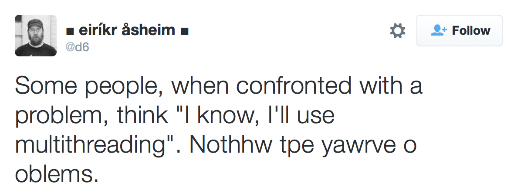
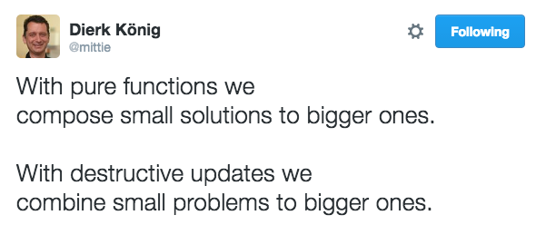

x = x + 1Javaslang
A Functional Library for Java 8+
Rahel Lüthy – @netzwerg999
May 2016
Javaslang
Immutable collections
Functional control structures
Why?
Fundamental nonsense at the heart of programming:
But it’s an assignment, I hear you say – well…
Math Functions vs. Java Methods
Math
y = sin(x)
Java
List<String> doSomething(List<String> list)Math Functions
y = sin(x)1 input → 1 output
same input → same output
referential transparency
Data In – Data Out
Known as pure or side-effect-free
Easy to understand
Easy to write
Easy to test
Function chaining: Programs as data pipelines
Java Methods
List<String> doSomething(List<String> list)3 potential inputs
5 potential outputs
Java Methods
List<String> doSomething(List<String> list) {
if (this.state.isEmpty() || list.isEmpty()) {
throw new IllegalStateException("Ouch...");
}
list.add(this.state.get(0));
list.add(CONSTANT);
this.moreState.addAll(list);
OtherClass.mutableStaticField = list;
return new ArrayList<String>(list);
}3 potential inputs
5 potential outputs
Garbage In – Garbage Out
3 potential inputs
parameters
instance state
global state
5 potential outputs
return value
mutable instance state
mutable global state
mutable parameters
exceptions
Why Is This Bad?
Many possible interactions
Hard to write, read & test
Hard to re-use
Shared mutable state is evil

We Can Do Better!
1 potential input
parameters
instance state – static methods, pass as param
global state - pass as param
1 potential output
return value
mutable instance state - immutability
mutable global state - immutability
mutable parameters - immutability
exceptions - pass as return value
Immutability
No side effects
Fewer possible interactions
Sharing becomes safe
Deep-copying becomes unnecessary
==impliesequals
Functional Programming
A simple mental model:
Your brain can focus on the scope of one method
You can be sure that nothing else is relevant
But:
We need immutable collections and functional control structures
Immutable Collections
Java only offers pseudo-immutability:
List<String> list = Arrays.asList("hello", "runtime-errors");
List<String> unmodifiableList = Collections.unmodifiableList(list);
unmodifiableList.add("boom"); // UnsupportedOperationExceptionJavaslang offers truly immutable collections:
List<String> l = List.of("immutability");
List<String> newCopy = l.prepend("hello");Overview

Simplicity 1/2
Java:
List<String> words = Arrays.asList("hello", "world").stream().
filter(s -> s.startsWith("h")).collect(Collectors.toList());Javaslang:
List<String> words = List.of("hello", "world").filter(s -> s.startsWith("h"));Simplicity 2/2
Java needs dirty tricks for basic functionality:
Map<String, Integer> map = new HashMap<String, Integer>() {
{
put("Java", 8);
put("Javaslang", 2);
}
};Javaslang:
Map<String, Integer> map = HashMap.ofEntries(
Tuple.of("Java", 8),
Tuple.of("Javaslang", 2)
);Coherence
Java 8 introduced Optional but does not make use of it:
Integer value = map.get("whatever"); // maybe nullJavaslang:
Option<Integer> optionalValue = map.get("whatever");Better Streaming
Java streams are just fancy iterators, they can only be used once:
Stream<Integer> stream = Stream.of(1, 2, 3);
List<Integer> squares = stream.map(i -> i * i).collect(Collectors.toList());
Stream<Integer> timesTen = stream.map(i -> i * 10);
// IllegalStateException: stream has already been operated upon or closedJavaslang streams are true collections:
Stream<Integer> numbers = Stream.of(1, 2, 3);
Stream<Integer> squares = numbers.map(i -> i * i); // 1, 4, 9
Stream<Integer> timesTen = numbers.map(i -> i * 10); // 10, 20, 30Tuples / Zipping
Tuple2<String, Integer> pair = Tuple.of("java", 8);
String first = pair._1; // "java"
Integer second = pair._2; // 8
List<String> words = List.of("hello", "java");
List<Tuple2<String, Long>> wordsWithIndex = words.zipWithIndex();
List<Integer> numbers = List.of(42, 8);
List<Tuple2<String, Integer>> wordsWithNumbers = words.zip(numbers);Functional Values
Option: Express absence vs. presence
Future: Express pending vs. completed
Try: Express failure vs. success
Lazy: Express uninitialized vs. initialized
Validation: Express invalid vs. valid
All of them are monadic containers which implement a common Value interface
Resources
